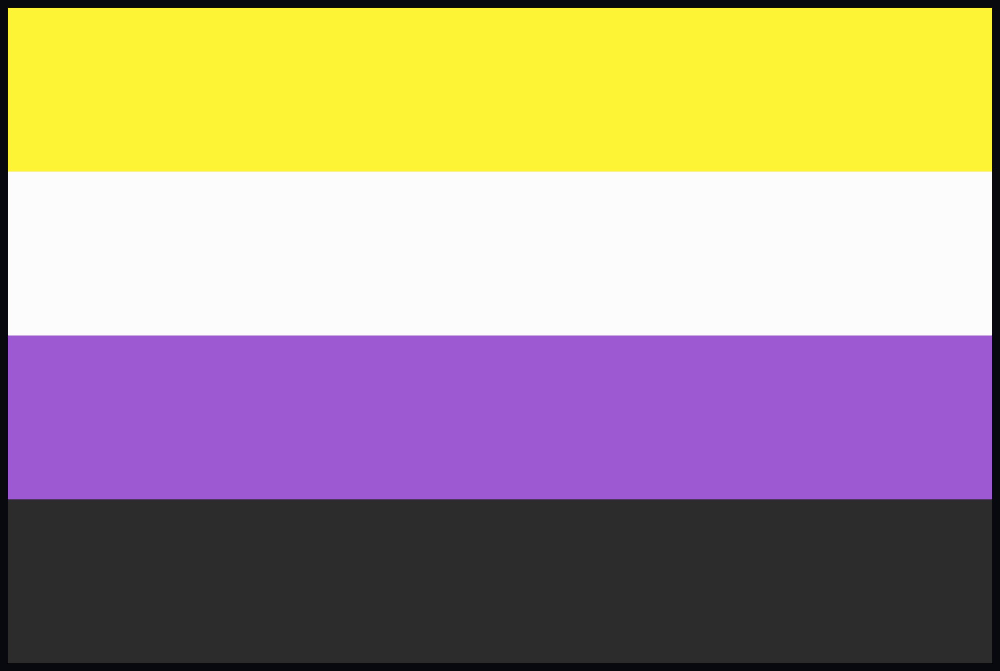

Understanding Nonbinary
The nonbinary gender identity is most commonly defined as an identity that doesn’t fully identify with being either male or female. This could mean that a nonbinary person identifies with both male and female, or it could mean that they identify with none of them. There isn’t exactly a specific definition of what being nonbinary means, and usually people have their own definitions for what being nonbinary means to them. In any case, it doesn’t hurt to ask.

This is the nonbinary flag! It’s made up of colors similar to the ones you see throughout this entire webpage. It was made by Kye Rowan in 2014. The colors represent something- the yellow represents people whose gender exists outside the binary, the white represents people with many/all genders, the purple represents genders that are a mix of male and female, and the black represents people who don’t identify with gender at all.
It’s worth noting, also, that someone identifying as nonbinary can also identify as transgender, though the nonbinary identity isn’t necessarily under the transgender umbrella. This makes sense because of how broad the definition of being nonbinary can be.
Gender identity and gender expression are both very important when it comes to this, and even outside of the scope of being nonbinary.
- Gender identity is defined as what you yourself identify as.
- Gender expression, on the other hand, is how you present your gender.
It's important to note that your gender identity and expression don't always have to be the same! You could identify as a male but express yourself very femininely, and vice versa.
Sources:
Oliver, D. (2021, 19 May). Stars like Demi Lovato, Elliot Page, Sam Smith identify as nonbinary. What does that mean?. USA Today. https://www.usatoday.com/story/life/2021/05/19/what-is-nonbinary-definition-demi-lovato-elliot-page-sam-smith/5161569001/
Grand Rapids Pride Center. (n.d.). NonBinary Pride Flag - Grand Rapids Pride Center. Retrieved November 5, 2021, from https://grpride.org/product/nonbinary-pride-flag/
Ontario Human Rights Commission. (n.d.). Gender identity and gender expression (brochure). Retrieved November 5, 2021, from http://www.ohrc.on.ca/en/gender-identity-and-gender-expression-brochure